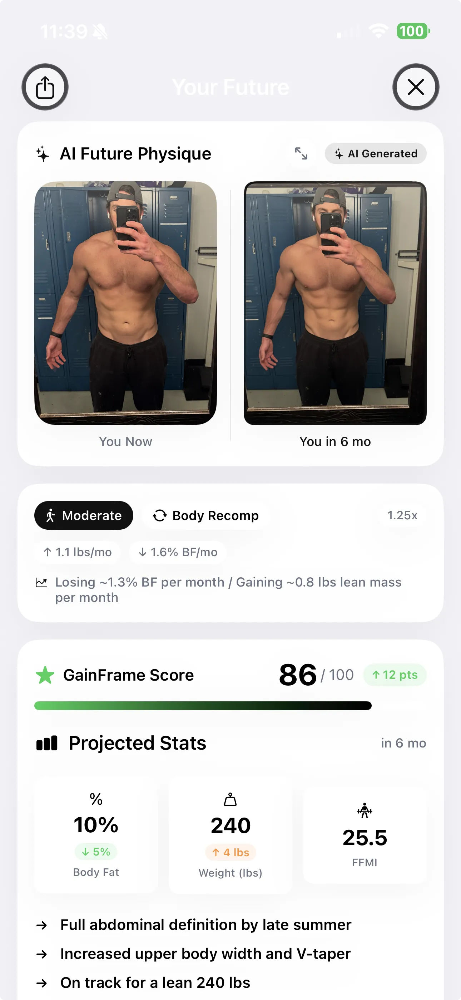

Best AI Body Editor Apps in 2026 (And Why You Might Want Something Different)
AI body editors can make you look 20 lbs leaner in 3 taps. But they can't tell you if your workouts are actually working. Here's the difference between editing your body and analyzing it.
You can make yourself look shredded in under a minute. FaceApp, BodyTune, RetouchMe — they'll slim your waist, sharpen your jawline, and add definition to your arms before you've finished your morning coffee.
Millions of people use these apps every day. Most of them are just having fun. But some are using them to visualize fitness goals, preview body transformations, or — let's be honest — fake progress photos.
Here's the thing nobody says out loud: editing a photo of your body doesn't change your body. And if you're trying to track real progress, editing apps are actively working against you.
There's a different category of app that does something more useful — AI body analysis. Instead of morphing your photo to look different, these apps analyze your actual photo to tell you what's changing, what isn't, and what's realistic for you.
This is a comparison of both approaches. When editors make sense, when they don't, and what to use instead if you actually want to improve.
What AI body editor apps actually do
Body editors use AI to reshape your body in photos. You upload a selfie, drag a slider, and watch your waist shrink, shoulders widen, or abs appear. The technology is genuinely impressive — modern apps produce edits that are nearly impossible to detect.
Here are the most popular ones in 2026:
- FaceApp — The most well-known. Started with face aging filters, now includes full body reshaping. Free with heavy ads, pro version unlocks more tools.
- BodyTune — Dedicated body editor with sliders for waist, legs, height, shoulders, and more. Clean interface, but aggressive subscription pricing.
- RetouchMe — Uses real human retouchers (not just AI) for natural-looking results. Pay-per-edit model. Higher quality but slower turnaround.
- Body Editor — Simple, free option for basic body reshaping. The results are less polished but it gets the job done for casual use.
- Photable — Face and body editor combined with skin smoothing. Popular in the selfie/social media crowd.
These apps are fine for what they are: entertainment tools. The problems start when people use them for something they were never designed for.
The problem: fake progress and unrealistic expectations
If you're editing your progress photos — even slightly — you've just destroyed the entire point of taking them.
Progress photos exist to show you what's actually happening to your body over time. When you adjust the sliders, you're not tracking progress. You're creating fiction. You might feel better in the moment, but you've lost the ability to honestly evaluate whether your training and nutrition are working.
An edited photo gives you dopamine without the work. It satisfies the same reward your brain would get from real progress — except nothing actually changed.
The second problem is more subtle: body editors don't know what's realistic for you. They'll happily give you a physique that isn't achievable for your frame, age, training history, or genetics. That's not visualization — it's fantasy. And comparing yourself to an AI-generated version of yourself that can't exist creates the same psychological trap as comparing yourself to edited influencer photos.
If you're using these apps for fun, no harm done. But if you're trying to use AI for fitness, there's something that actually helps.
The alternative: AI body analysis apps
AI body analysis takes the opposite approach. Instead of changing your photo to look different, it reads your actual photo to extract real data.

These apps analyze your progress photos to track meaningful metrics over time:
- Body fat percentage — estimated from your photo without calipers or a DEXA scan.
- Muscle development by area — which muscle groups are growing, which are lagging, and where to focus training.
- Proportional changes — shoulder-to-waist ratio, arm symmetry, and overall balance.
- Trend data — how your body fat, weight, and physique score are moving over weeks and months.
- Realistic projections — based on your age, sex, training history, and actual rate of change, what you can realistically achieve in 6 or 12 months.
The word "realistic" does a lot of heavy lifting here. A body editor shows you whatever you drag the slider to. An analysis app shows you what's actually achievable based on your data — your current body fat trend, your muscle gain rate, your genetics as reflected in your photos.
That's a fundamentally different tool. One tells you what you want to hear. The other tells you what's actually happening.
Body editors vs. body analysis: side-by-side comparison
| AI Body Editors | AI Body Analysis | |
|---|---|---|
| Purpose | Make you look different in photos | Track what's actually changing in your body |
| Input | Single photo | Historical timeline of photos + weight + workout data |
| Output | An edited image | Body fat %, muscle scores, projections, coaching |
| Expectations | Shows impossible results | Realistic projections from your actual data |
| Over time | Each edit is independent — no memory | Tracks trends across weeks and months |
| Personalization | None — same sliders for everyone | Factors in age, sex, genetics, training history |
| Helps you improve? | No | Yes — identifies weak areas and tracks progress |
When body editors actually make sense
Body editors aren't evil. They have legitimate uses:
- Fun and curiosity. What would I look like with a six-pack? With broader shoulders? These are harmless questions and body editors answer them instantly.
- Social media content. Some creators use body editing tools openly as part of humorous or educational content about body standards.
- Rough goal visualization. If you understand the limitations, a quick edit can give you a general sense of direction — as long as you don't treat the output as a realistic target.
The key distinction: body editors are a creativity tool, not a fitness tool. Use them like you'd use a fun photo filter — for entertainment, not decision-making.
How AI body analysis actually works
If you've never used an AI body analysis app, here's what the process looks like:
- Take standardized progress photos. Front, back, and side — same lighting, same distance. Some apps guide you through the poses automatically.
- AI analyzes your physique. The app estimates body fat percentage, identifies muscle development across individual muscle groups, and scores your overall physique.
- You get trend data. Over multiple check-ins, the app tracks how your body fat, muscle scores, and proportions are changing. This is where the real value lives — it's not any single reading, it's the trend.
- Projections based on your trajectory. Using your real data — rate of change, age, sex, training consistency — the app projects where you'll be in 6 or 12 months if you stay on track.
Apps like GainFrame use this approach. You take a photo, get scored, and over time the app builds a data-driven picture of your transformation. The predictions aren't based on sliders — they're based on your actual history.
Quick checklist: which app type do you need?
Want to edit photos for social media?
Use a body editor (FaceApp, BodyTune). They're fast and fun.
Want to know if your workouts are working?
Use a body analysis app. It tracks real changes over time.
Want realistic goals based on your body?
Use a body analysis app. Projections come from your actual data.
Want to identify lagging muscle groups?
Use a body analysis app. It scores individual muscles and gives targeted advice.
Stop editing. Start tracking.
AI body editors and AI body analysis apps both use your photos. But they do completely different things with them. One changes the photo. The other reads it.
If you're serious about your physique, here's a simple framework:
- Stop comparing yourself to edited photos. Yours or anyone else's. The only comparison that matters is you vs. you — last month.
- Pick a tracking method that uses your real data. Progress photos with AI analysis, a DEXA scan, or even consistent measurements. As long as it's honest.
- Check progress monthly, not daily. Bodies change slowly. A monthly check-in gives you enough data to see real trends without the noise of daily fluctuation.
The best AI fitness tool isn't the one that shows you what you wish you looked like. It's the one that shows you what's actually happening — and what's realistic from here.